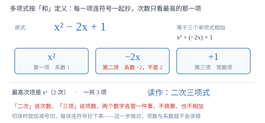

多项式与整式
多项式是几个单项式的和——注意是「和」，所以每一项都带着自己的符号。次数只看最高次的那一项，绝不求和。
| 所属主题 | 整式的加减 |
|---|---|
| 所属模块 | 代数 |
| 课标学段 | 第四学段（7~9 年级） |
| 前置知识 | 单项式 |
| 核心素养 | 抽象能力推理能力 |
教材定位
人民教育出版社《人教版（2024版）义务教育教科书·数学》
七年级上册第4章 整式的加减4.1 整式
对应七上 4.1 整式第 2 课时（多项式及整式）。教材由「路程之和」引入多项式；本篇把「项为什么连符号读」「次数为什么取最高项」分别给出证明，并把整式与分式的边界用反证划清。
说明
几个单项式的和叫做多项式。其中每个单项式叫做多项式的一项，不含字母的项叫做常数项。x^2-2x+1 有三项：x^2、-2x、1，第三项就是常数项。说「几项」时把常数项也算进去，所以它是三项而不是两项。
多项式里次数最高项的次数，叫做这个多项式的次数。x^2-2x+1 的最高次项是 x^2（2 次），所以它是二次三项式：「二次」说的是次数，「三项」说的是项数，两个数字各管一件事，互不换算。
单项式与多项式统称整式。判断一个式子是不是整式，只查两处：分母里有没有字母，根号下有没有字母。分母含字母（如 1/x、x/x+1）不是整式，根号下含字母（如 \sqrtx）也不是。整式的特征是：只有加法、减法、乘法与乘方，且除数一定是数。
使用场景
概念题常问「这个多项式是几次几项式」「常数项是多少」「哪几项是同次的」。另一类常见题是把一堆式子摆出来让人分类：哪些是单项式、哪些是多项式、哪些根本不是整式。两类题考的都是「切块」与「读次」这两步。
列式题的后半段要用到它：把实际问题的答案写成一个多项式，再按题目要求整理成「几次几项式」，或者指出某一项的系数。写到这一步才算答完，只列式不整理往往要扣分。
注意点
项要连符号一起读。x^2-2x+1 的第二项是 -2x 而不是 2x，系数是 -2 而不是 2。这是把多项式看作「和」的必然结果：x^2+(-2x)+1。
多项式的次数取最高次项的次数，不是各项次数相加。x^2+x 是二次，不是三次；3a^2b-ab+5 是三次，因为 3a^2b 是 2+1=3 次。
常数项也是项，项数要算上它；同时常数项本身可能带负号。0.4x-20 是二项式，常数项是 -20 而不是 20。
证明

图 1：切块时每块连符号一起抄下来，项数与次数是两个互不相干的数字
证明
结论 1多项式的每一项必须带着前面的符号，因为定义里用的是「和」。
有理数减法法则说，减去一个数等于加上它的相反数，所以 x^2-2x+1 可以完整写成 x^2+(-2x)+1，这是三个单项式的和，各项分别是 x^2、-2x、1。既然每一项都是「加进来的一个整体」，-2x 这一项的系数自然是 -2。若硬读成「x^2 减去 2x」，那「项」就不再是单项式——2x 前面还有一个没处理的减号，与「项是单项式」的定义矛盾。
关键一步依据是减法统一为加法的法则；「项」的身份是单项式，符号是它自身的一部分。
结论 2多项式的次数取最高次项，不是各项次数之和。
次数要刻画「这个式子最大能提供多少重字母相乘」。取 x^2+x：x=10 时值为 110，其中 x^2=100 占主导；x=100 时值为 10100，x^2=10000 仍占主导。无论 x 取多大，值的大小与变化快慢都由 x^2 决定，x 只是零头。若按求和算成三次，就与「多项式由最高次项主导」这一事实不符。更直接的矛盾是：把 x^2 写成 x^2+0x，式子没有变，求和法却会把次数从 2 改成 3——次数居然依赖于写不写一个系数为零的项，这就站不住脚。
关键一步依据是次数必须反映式子的主导结构，并且不能因为添上系数为零的项而改变；只有「取最大」同时满足这两条。
结论 3分母含字母的式子不是整式。
整式由单项式与多项式组成，而单项式必须是「数与字母的积」的形式。1/x 表示 1 除以 x，除数是字母，无法写成「某个数乘上若干字母」：假设 1/x=a\cdot x^n（a 为常数），两边同乘 x 得 1=a\cdot x^n+1。取 x=2 得 a=\dfrac12^n+1，取 x=3 得 a=\dfrac13^n+1，两式要同时成立只有 n+1=0；可 n+1=0 意味着字母的指数是 -1，而单项式要求字母的指数是非负整数（单项式），这条路从定义上就走不通。所以这样的 a、n 不存在，1/x 既不是单项式也不是多项式，整式里没有它。
关键一步依据是单项式定义要求「积」的形式；除以一个数可以改写成乘这个数的倒数，除以字母则不能。
动手实验
列出六个式子：3x^2、-5、a+b、x+1/3、3/x、\sqrta，逐个用两条判据过筛。3x^2 与 -5 能写成「数 × 字母连乘」，是单项式；x+1/3 的分母是数字 3，可拆成 x/3+1/3，是两个单项式的和，属于多项式；a+b 也是多项式；3/x 的除数是字母，\sqrta 是开方，两个都过不了「积」这一关。最后统计：整式共 4 个（2 个单项式 + 2 个多项式），另 2 个不是整式。
解题思路
判断几次几项式按三步。第一步切块：按加减号把式子切开，每块连符号一起抄下来，数清有几块就是项数；第二步读次：对每块单独读次数（系数不动，只数字母指数和），取最大的那个作为多项式的次数；第三步连起来说「几次几项式」，如二次三项式。三步顺序不能换，先切块才有得读次。
判断是不是整式只查两处：分母与根号。分母是数字或没有分母、根号下是数字，就可能是整式；分母或根号下出现字母，一定不是。多项式还要额外验一条：切出来的每一块都得是单项式，出现 1/x 这类块就整体不算整式。
按要求写多项式时先定项数与次数，再逐项凑。写一个「三次二项式」，可以取 -2x^3+5，也可以取 a^2b-1；只要最高次是 3、一共两项、每项都是单项式就算对。写完回头数一遍项数和最高次，比只看形式可靠。
按场景的例题
例 1（场景：图形设计） 长方形面积
一个长方形长 (a+3) 厘米、宽 a 厘米，面积是 a(a+3)=a^2+3a 平方厘米。把它写成多项式，说出它是几次几项式、各项系数与常数项。
解：展开后 a^2+3a 有两项：a^2（系数 1）与 3a（系数 3），没有常数项（可看作常数项为 0）。最高次项 a^2 是 2 次，所以是二次二项式。a^2 的系数是 1，不是 0——省略写不等于不存在，这一点在下一步合并同类项时会直接影响成败。
答：二次二项式；两项系数分别是 1 与 3，常数项为 0。
例 2（场景：销售与利润） 利润式
某商品按每件 x 元出售，成本为 (0.6x+20) 元。把利润写成多项式，指出它是几次几项式、常数项是多少；当 x=100 时利润是多少元？
解：利润 =x-(0.6x+20)=x-0.6x-20=0.4x-20，是一次二项式，常数项是 -20。它带负号，因为这笔 20 是被减掉的固定成本；如果读成 20，就等于把这笔支出当成收入。x=100 时代入得 40-20=20 元。
答：0.4x-20，一次二项式，常数项 -20；利润 20 元。
例 3（场景：行程与速度） 两段路程之和
甲地到乙地，先以 60 千米/小时行驶 t 小时，再以 40 千米/小时行驶 (t-1) 小时（t>1）。把总路程写成多项式，说出次数与项数；t=3 时总路程是多少？
解：总路程 =60t+40(t-1)=60t+40t-40=100t-40，一次二项式。t=3 时 100× 3-40=260 千米。再用原式直接算一遍：60× 3+40× 2=180+80=260，两种算法结果一致——这说明去括号与合并同类项都没有改变式子的值，只改变了它的写法。
答：100t-40，一次二项式；总路程 260 千米。
常用推论
多项式缺哪一项，就说那一项系数为 0：x^2+1 可看作 x^2+0x+1，一次项系数是 0、常数项是 1。
「几次」与「几项」互不相干：二次三项式、三次二项式都常见，别把项数当成次数，也别因为项多就以为次数高。
整式一定是有理式，有理式不一定是整式：分母含字母的分式属于有理式，但不属于整式。
易错点
错说 x^2-2x+1 的第二项是 2x、系数是 2。
为什么错多项式按「和」定义，第二项要连符号读作 -2x。
正确三项分别是 x^2、-2x、1，系数依次为 1、-2、1。
错说 x^2+x 的次数是 3，把各项次数加起来。
为什么错次数取最高次项，x^2 是 2 次、x 是 1 次，最高的就是 2。
正确x^2+x 是二次二项式。
错把 x+1/3 当成「分母含字母所以不是整式」。
为什么错分母是数字 3，可以拆成 x/3+1/3，是两个单项式的和。
正确x+1/3 是整式（一次二项式）；3/x 才不是整式。
直观理解
多项式像一张购物清单：每一项是「几件什么东西」，正项是买进、负项是退回。核对清单时要先看清每行前面是加还是减，再把同一种东西的件数归堆。多项式的次数就是清单里最「重」的那一行，不是把所有行的件数加起来。